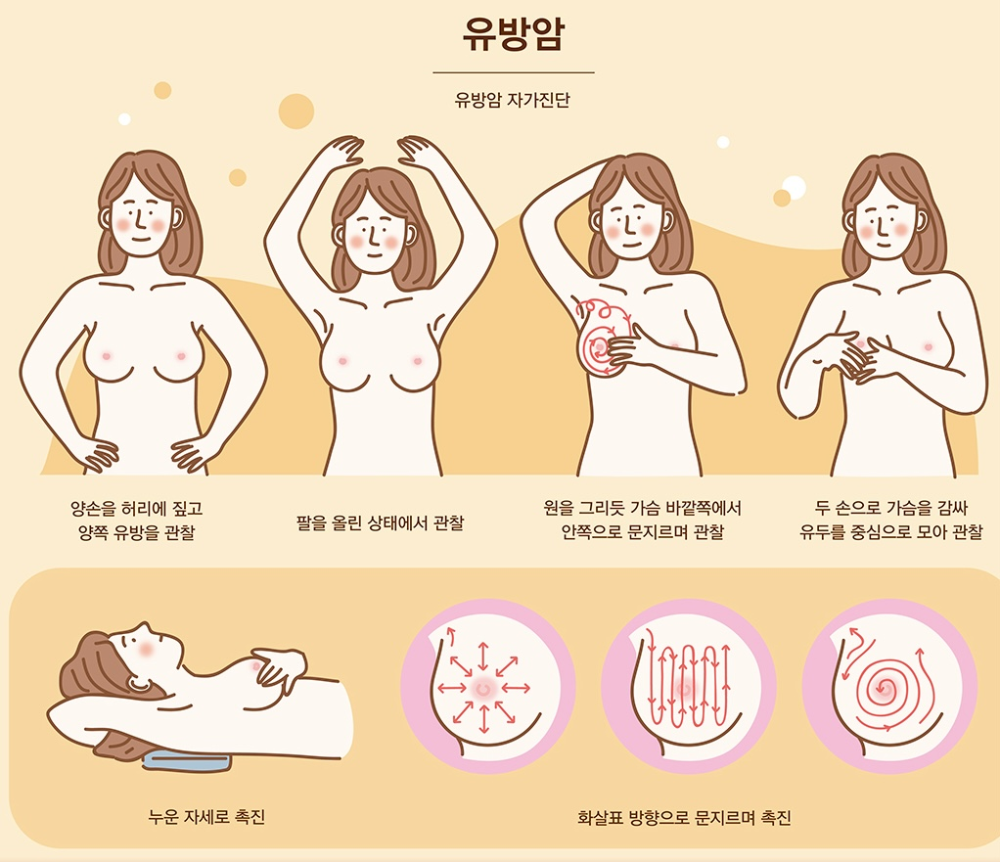

1분 동안
아무것도 하지 않고
참아보세요
아무것도 하지 않고
참아보세요
(터치 금지, 스크롤 가능)
다시 시도해보세요!
와우, 30초나 잘 참으셨네요! 생각보다 길게 느껴지지 않으신가요?
유방암 자가진단은 빠르면 1분도 걸리지 않을 수 있습니다.
유방암 자가진단을 통해 유방암의 80%를 조기에 발견할 수 있어요.
한국 기준 연 2만명 이상의 사람이 유방암을 진단받고 있으며, 진단 연령대는 점점 어려지고 있습니다.
남은 시간동안 아래 이미지에 적혀있는 유방암 자가진단 방법을 읽어보세요!
1분이 지나면, 이미지를 꾹 눌러서 저장하실 수 있어요.
1:00
